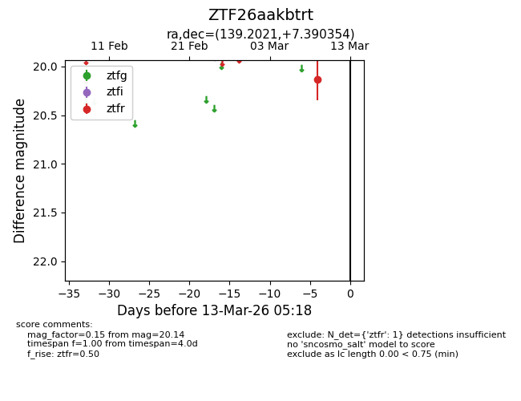
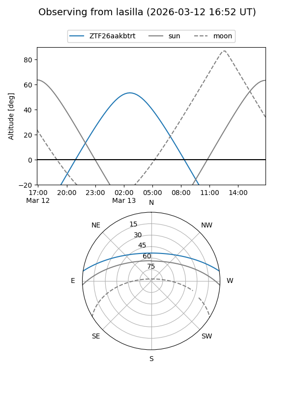
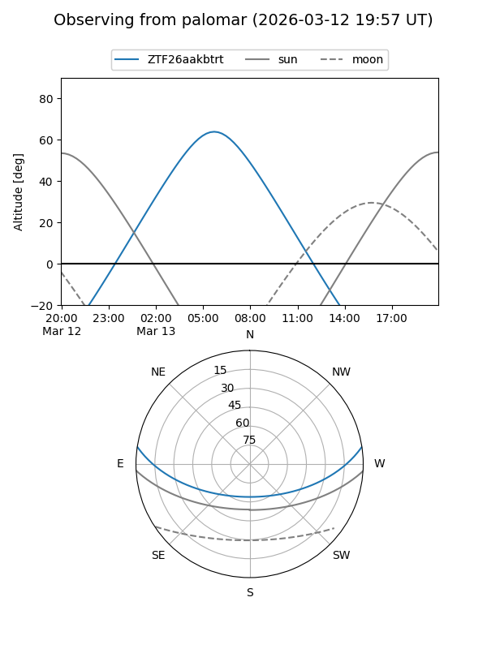

ZTF26aakbtrt
Target ZTF26aakbtrt at 2026-03-13 05:20
Aliases and brokers:
FINK: link
Lasair: link
ALeRCE: link
alt names
ZTF26aakbtrt (ztf,fink_ztf)
Coordinates:
equatorial (ra, dec) = 139.2021,+7.39035
equatorial (HMS+DMS) = 09:16:48.51,+07:23:25.28
galactic (l, b) = (223.8095,+35.56947)
Flags:
Photometry:
last ztfr=20.14
1 ztfr detections
Lightcurve

Visibility


Additional plots